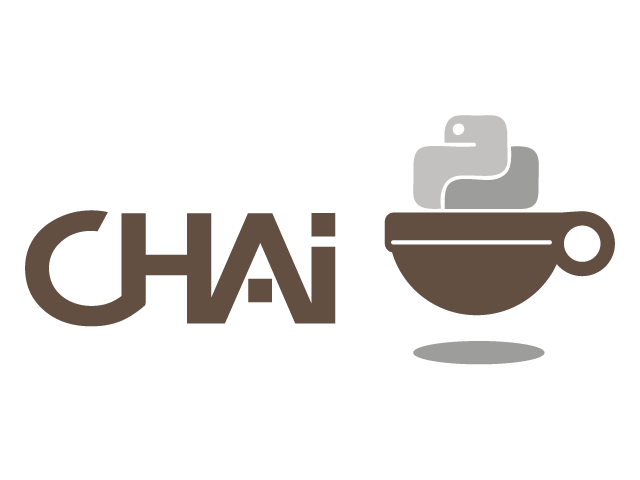

Vitaly Babiy
@vitaly_babiy

chai?
- Easy to use mocking/stubbing framework
- Does not use the setup, then replay model
- Robust expectation library
- Robust set of Argument Comparators
- Extensive test suite
- API is patterned after the Mocha mocking library
- Fun!

Hackathon
Created by: Aaron Westendorf And I
Lets See the Code
Creating a Mock
mock() # Returns a mock object
Mocking object in module
mock(custom_module, 'some_object')
custom_module.some_object # Is a mock object nowStubbing
def test_stub_name(self):
obj = MyClass()
expect(obj.name).returns("Vitaly")
assert_equals('Vitaly', obj.name)Expectation
def test_stub_name(self):
obj = MyClass()
expect(obj.name).returns("Vitaly").at_least(5)
for x in xrange(4):
assert_equals('Vitaly', obj.name)
# Raises error, obj.name was not called 5 timesBring it together
class MockTestCase(Chai):
def test_mock_get(self):
# Pass in a mock, is stored as obj.handle
obj = CustomObject( mock() )
# Setting an expectation on do
expect( obj.handle.do ).args('it').returns('ok')
assert_equals('ok', obj.do('it'))
# Raises UnexpectedCall, no expectation was set
assert_raises( UnexpectedCall,
obj._handle.do_it_again )Expectation API
args(*args, **kwargs)
returns(value)
raises(exception)
side_effect(callable)
times(int)
at_least(int)
at_least_once()
at_most(int)
at_most_once()
once()
any_order()Argument Comparators
ignore()
equals(object)
is_a(type)
is_arg(object)
almost_equals(float, places)
any_of(comparator_list)
all_of(comparator_list)
not_of(comparator)
matches(regex_pattern)
func(callable)
in_arg(in_list)
contains(object)Where to find chai
It's up on PyPi
$ pip install chai
Fork it on github
- https://github.com/agoragames/chai
Future
We want your help
Fork on github and sumbit pull requests
Is Chai being used
- YES!
- At AgoraGames
- We are porting all existing pymox test to chai
- All future development is using chai
Contact Info
Me
- Twitter: @vitaly_babiy
- Email: vbabiy@agoragames.com
- Find me here at the confernce
Aaron Westendorf
- Twitter: @WashUffize
- Email: aaron@agoragames.com